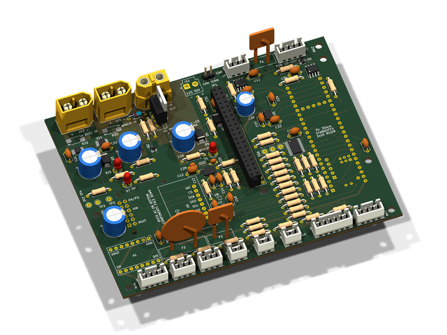
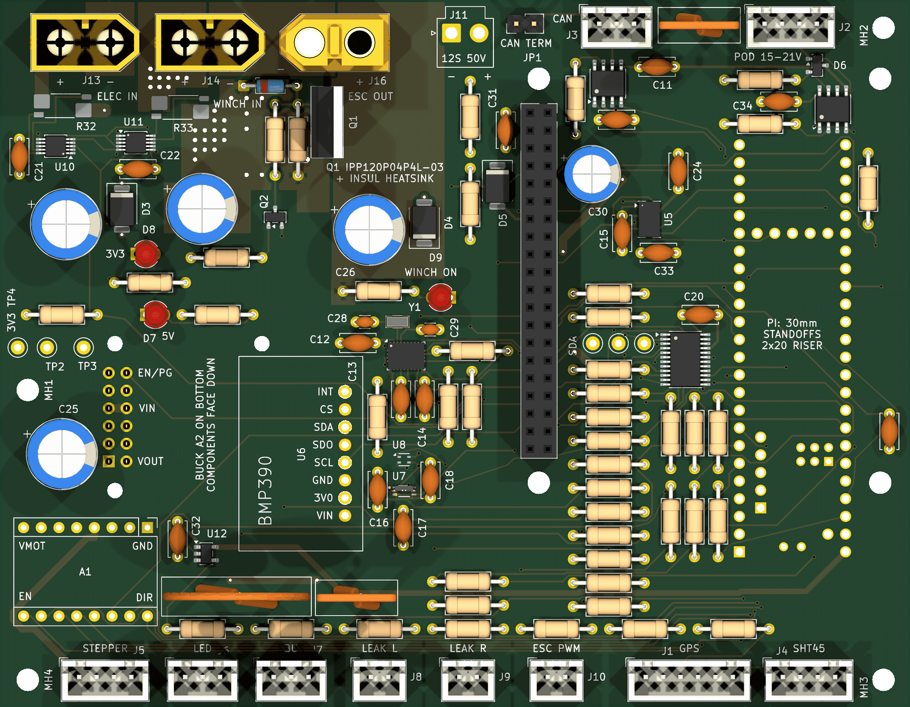
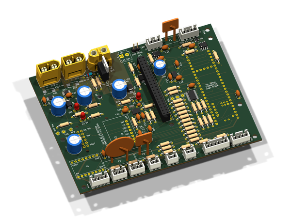
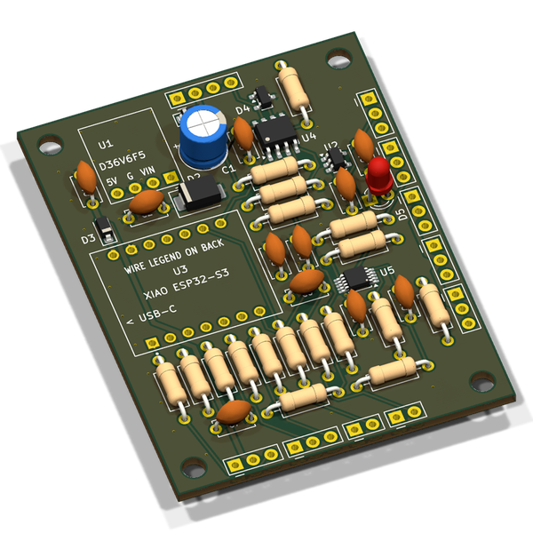
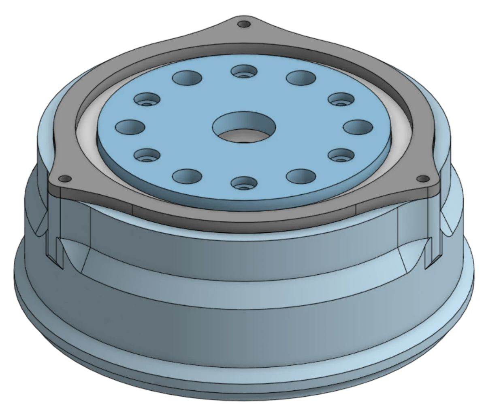

The boat, piece by piece.
V3 is a modular twin-hull survey boat: a Linux mission computer, a real-time controller and a tethered sensor pod, joined by one custom carrier board. Its first job is to drive itself around small bodies of water and sample them.
From a route on a map to data on a map.
Every V3 survey will follow the same loop. The operator sets the plan; the boat handles driving, sampling and telemetry, with a hand-held radio override always within reach.
- 01
Plan
Draw a route and sampling stations in the web dashboard. The mission uploads to the boat over 4G.
- 02
Drive
GPS and IMU heading control steer the twin motors from waypoint to waypoint. A hand-held radio can take over at any time.
- 03
Sample
At each station the pod samples the water at the surface, while a fish-finder sonar measures the depth below the boat.
- 04
Stream
Readings are geo-tagged and sent to the cloud, where they appear on a live map.
One board ties it all together.
The carrier board hosts the Raspberry Pi 5 and the Teensy 4.1, talks to both motor controllers over CAN, and splits power into three isolated domains.

- Teensy 4.1Real-time controller for sensors, motors and safety. Fitted on the underside, so only its header holes show here.
- Raspberry Pi 5 socketThe Pi plugs in here on standoffs. This header carries 5 V power only; every control signal goes through the Teensy.
- CAN link to motor controllersTJA1051 transceiver and a 3-pin connector to the two VESC motor controllers, plus a jumper for the 120 Ω terminator.
- I²C sensor multiplexerTCA9548A splits one I²C bus into 8 channels: IMU, accelerometer, barometer, light sensor, two humidity sensors, power monitors, GPS compass.
- Sensor-pod link (RS-485)THVD2410 transceiver and a 4-pin connector for the tether to the water-sensing pod. The same cable powers the pod.
- GPS connector6-pin cable socket for the u-blox M10 GPS module: serial data plus the I²C lines of its built-in compass.
- RC receiver input (SBUS)3-pin socket for the radio-control receiver, the manual override. Its 5 V supply is fused loosely so it never nuisance-trips.
- Battery inputsTwo XT60 connectors take separate battery packs: one for the electronics, and one for the winch used in the later sample-collection stage. A 5 V buck regulator on the underside powers the Pi and Teensy.
- Battery monitors (INA228)Two INA228 chips with shunt resistors measure voltage and current on the electronics pack and the winch pack.
- Winch safety cut-offA P-channel MOSFET switches power to the winch controller and fails safe: if the Teensy resets or loses power, the winch is off. Kept on the board for the later sample-collection stage.
Key
- 01Teensy 4.1 Real-time controller for sensors, motors and safety. Fitted on the underside, so only its header holes show here.
- 02Raspberry Pi 5 socket The Pi plugs in here on standoffs. This header carries 5 V power only; every control signal goes through the Teensy.
- 03CAN link to motor controllers TJA1051 transceiver and a 3-pin connector to the two VESC motor controllers, plus a jumper for the 120 Ω terminator.
- 04I²C sensor multiplexer TCA9548A splits one I²C bus into 8 channels: IMU, accelerometer, barometer, light sensor, two humidity sensors, power monitors, GPS compass.
- 05Sensor-pod link (RS-485) THVD2410 transceiver and a 4-pin connector for the tether to the water-sensing pod. The same cable powers the pod.
- 06GPS connector 6-pin cable socket for the u-blox M10 GPS module: serial data plus the I²C lines of its built-in compass.
- 07RC receiver input (SBUS) 3-pin socket for the radio-control receiver, the manual override. Its 5 V supply is fused loosely so it never nuisance-trips.
- 08Battery inputs Two XT60 connectors take separate battery packs: one for the electronics, and one for the winch used in the later sample-collection stage. A 5 V buck regulator on the underside powers the Pi and Teensy.
- 09Battery monitors (INA228) Two INA228 chips with shunt resistors measure voltage and current on the electronics pack and the winch pack.
- 10Winch safety cut-off A P-channel MOSFET switches power to the winch controller and fails safe: if the Teensy resets or loses power, the winch is off. Kept on the board for the later sample-collection stage.
Two boards, one tether.
Both boards were laid out in KiCad and checked against their schematics. The pod board rides inside the sensor pod and talks to the carrier over an RS-485 tether.


Spin the board.
The real V3 carrier board, exported straight from our KiCad layout. Drag to rotate, scroll or pinch to zoom.
V3, line by line.
The design as it stands today. Modular by intent: the hull, payload and software are configured for each application, starting with surface water-quality surveys.
| Hull | Modular twin-hull catamaran In CADNew V3 hull, differential steering |
|---|---|
| Mission computer | Raspberry Pi 5Navigation, mission logic, data logging, cloud link |
| Real-time controller | Teensy 4.1Sensor I/O, motor commands, safety |
| Drive | 2 × VESC motor controllers on CAN bus12S LiPo drive pack |
| Navigation | u-blox M10 GPS · BNO085 IMUPlus barometer, high-g accelerometer and light sensor |
| Depth | Fish-finder sonarReplaces the pod's pressure depth sensor |
| Sensor pod | Seeed XIAO ESP32-S3 on an RS-485 tetherpH, dissolved oxygen, TDS, turbidity and temperature, sampled at the surface |
| Telemetry | 4G LTELive map in the web dashboard |
| Manual control | SBUS RC receiverA hand-held radio can take over at any time |
| Power | Three isolated power domainsKept separate on the carrier board |
| Carrier board | 130.6 × 101.5 mm, 4 layers DesignedRev D, fully routed, 126 parts |
| Pod board | 48 × 63 mm, 2 layers DesignedRev B |
Vision-based obstacle detection, which we prototyped in V2, and lowering the pod on a winch for depth profiles. V3 samples at the surface and gets depth from sonar instead.
From measuring water to collecting it.
Further down the line, we want D.R.E.A.M.S to bring samples back, not just readings.

Cycloidal joint for the arm · CAD · in development
The plan is a robotic arm on deck that works with the winch to collect water samples and pull sediment from the bottom. Kyle has started on the arm: its joints are cycloidal gearboxes, sized with a gearbox simulator ↗ he specified and built with AI coding agents.
It builds on V1, where Matthew designed a Van Veen grab sediment sampler, delivered with a full drawing package and bill of materials.
In our conversations with the Port of Oakland and the Charles River Watershed Association, we learned that their teams still collect sediment samples by sending divers down. An arm on an autonomous boat could do that job without anyone going in the water.
Run a simulated survey.
The V2 command center runs in your browser with a simulated boat. V3's dashboard will build on it.